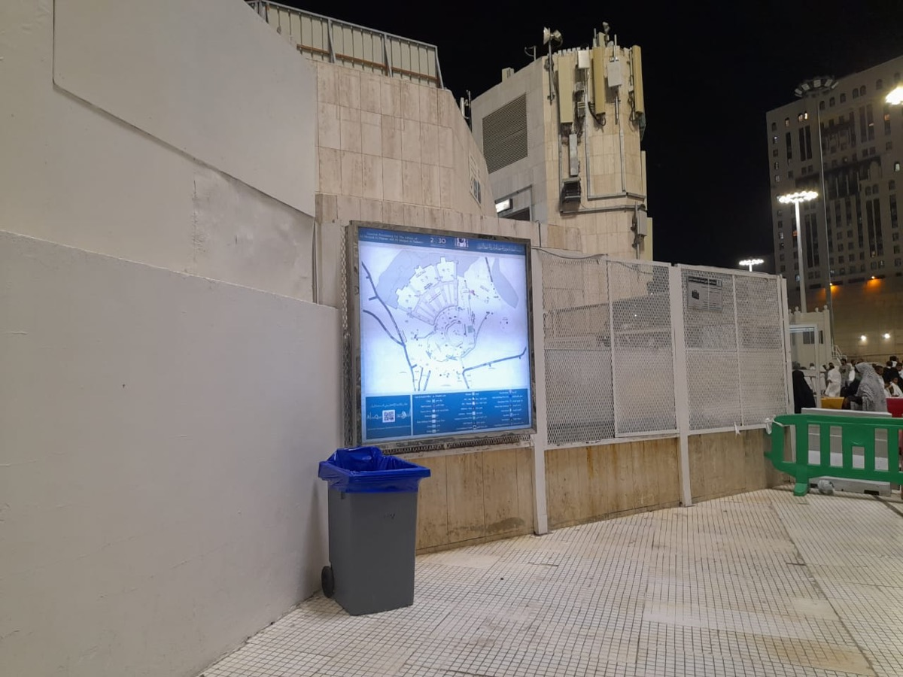
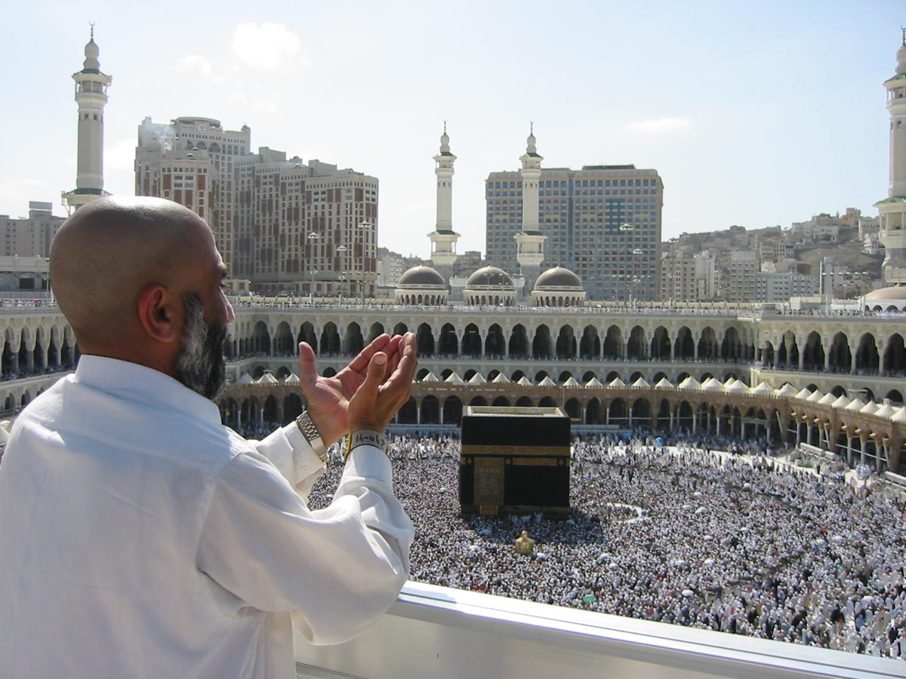

Umre Nedir?
Umre nedir, farz hacdan farkı nedir, hangi ibadetlerden oluşur ve ilk kez gidecek biri neyi bilmelidir? Hacipedia Umre rehberinin giriş sayfası.
Bu sayfada ne öğreneceksiniz?
Umre ibadetinin anlamı, temel adımları ve hacdan farkı. Konuyu özet geçmeden, ilk kez umreye gidecek birinin gerçekten işine yarayacak şekilde anlatıyoruz.
Pratik yaklaşım
Umrede bilgi kadar sıra, sakinlik ve hazırlık önemlidir. Bu bölümde hem ibadet tarafını hem de yolculukta karşılaşılabilecek pratik durumları birlikte okuyacaksınız.
A. Umrenin Anlamı
Umre, Müslümanın ihrama girerek Kabe’yi tavaf etmesi, Safa ile Merve arasında sa’y yapması ve tıraş olup ihramdan çıkmasıyla tamamlanan ibadettir. Hac gibi belirli günlere bağlı değildir; yılın büyük bölümünde yapılabilir. Bu yönüyle umre, kutsal topraklara daha kısa ama çok yoğun anlam taşıyan bir ibadet yolculuğudur.
Umreye giden kişi yalnızca Mekke’ye yolculuk yapmaz; niyetini, sabrını ve kulluk bilincini yeniler. İhrama girmekle birlikte bazı davranışlardan uzak durur, tavafta Kabe etrafında Allah’a yönelişini gösterir, sa’y ile Hz. Hacer’in teslimiyetini hatırlar.
Umre, Müslümanın ihrama girerek Kabe’yi tavaf etmesi, Safa ile Merve arasında sa’y yapması ve tıraş olup ihramdan çıkmasıyla tamamlanan ibadettir.
B. Umre Hangi İbadetlerden Oluşur?
Umrenin ana adımları ihram, tavaf, sa’y ve tıraş/kısaltmadır. Önce mikat sınırına gelmeden ihrama niyet edilir. Sonra Mekke’ye ulaşıldığında Kabe etrafında yedi şavt tavaf yapılır. Tavaftan sonra mümkünse iki rekat namaz kılınır, ardından Safa ve Merve arasında yedi gidiş gelişten oluşan sa’y yapılır.
Sa’y tamamlanınca erkekler saçlarını tıraş eder veya kısaltır, kadınlar ise saç uçlarından az miktarda keser. Böylece ihramdan çıkılır ve umre tamamlanmış olur.
Umrenin ana adımları ihram, tavaf, sa’y ve tıraş/kısaltmadır.


C. Umre ile Hac Arasındaki Fark
Hac, zilhicce ayının belirli günlerinde yapılan farz ibadettir ve Arafat, Müzdelife, Mina, şeytan taşlama ve kurban gibi ek görevler içerir. Umre ise yılın çoğu zamanında yapılabilir ve hac kadar uzun bir zaman planı gerektirmez.
Bu fark sebebiyle umre, hac yolculuğuna hazırlık gibi de görülebilir. Ancak umrenin kısa olması onu basit hale getirmez; ihram adabı, tavaf düzeni, kalabalık yönetimi, dua bilinci ve sağlık hazırlığı yine ciddiyet ister.
Hac, zilhicce ayının belirli günlerinde yapılan farz ibadettir ve Arafat, Müzdelife, Mina, şeytan taşlama ve kurban gibi ek görevler içerir.
D. İlk Kez Umreye Gidecekler İçin
İlk umrede en çok zorlanılan konular ihrama nerede girileceği, tavafta nasıl hareket edileceği, sa’yin kaç tur olduğu ve tıraşla ihramdan nasıl çıkılacağıdır. Bu yüzden yolculuktan önce adımları sırasıyla öğrenmek, küçük bir dua listesi hazırlamak ve kafile programını dikkatle takip etmek çok faydalıdır.
Umrede telaş yerine sakinlik gerekir. Kabe’yi ilk gördüğünüz an, tavaf kalabalığı ve ibadet yoğunluğu duygusal olarak güçlü olabilir. Bu yüzden önceden bilgi sahibi olmak kişinin ibadete daha huzurlu odaklanmasını sağlar.
İlk umrede en çok zorlanılan konular ihrama nerede girileceği, tavafta nasıl hareket edileceği, sa’yin kaç tur olduğu ve tıraşla ihramdan nasıl çıkılacağıdır.
Umreye başlamadan önce sıralamayı öğrenmek, mikat ve ihram hatalarını azaltır; ibadeti daha sakin ve bilinçli tamamlamaya yardımcı olur.